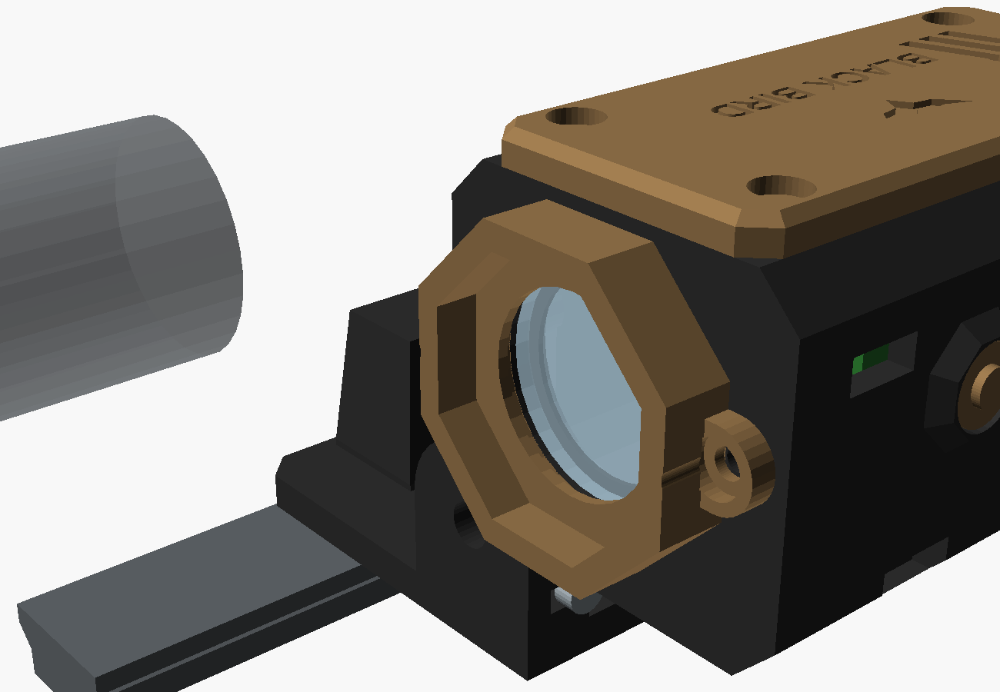
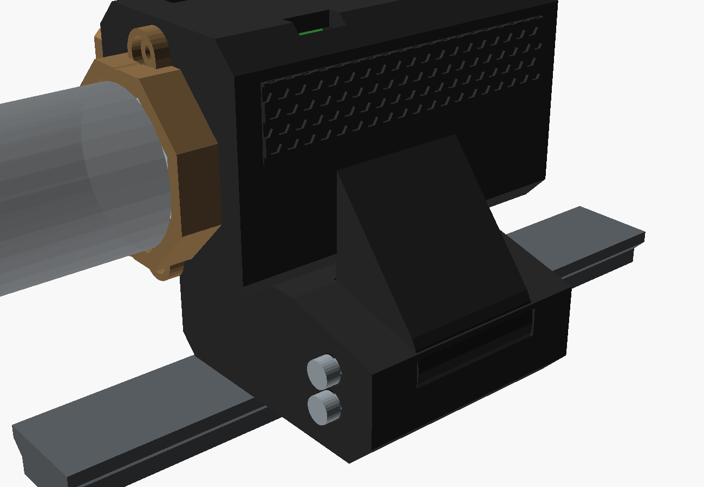
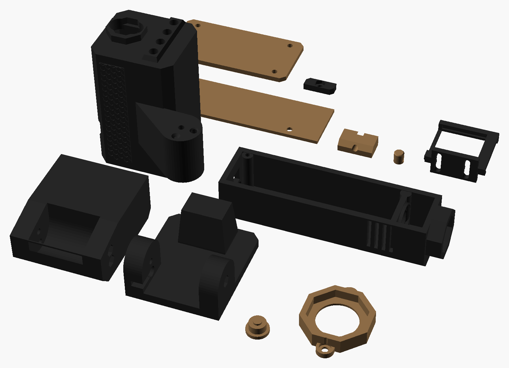

Funciona como um magnificador de mira holográfica, só que de visão noturna: fica na frente da luneta, não tem zoom (1x) e tem dois jeitos de fixar: basculante (vira para o lado esquerdo numa dobradiça com trava quando você não precisa dele) ou fixa, num elevador maciço, sempre na frente da luneta. A luneta continua fazendo o zoom dela; este aparelho só deixa você enxergar os alvos no escuro. Medidas em milímetros.
No modo "tamanho real", 1 mm do desenho = 1 mm na sua tela (depois de calibrar).
Encoste um cartão de crédito/débito na tela e mova o controle até o retângulo ter exatamente o mesmo tamanho (85,6 × 54 mm).
px/mm
cartão 85,6 × 54 mm
01Visão geral
1xsem zoom: o tamanho das coisas é o real; o zoom continua sendo o da luneta
76 × 46 × 47unidade (mm), compacta: do tamanho de um magnificador de holo; topo a 74 mm do trilho
80–100 mver uma pessoa no escuro com a lanterna IR 850 nm no trilho; só com os LEDs do aparelho, 15–25 m (estimativa)
≈ 2–3 hLiPo 1000 mAh (menos com o IR no alto; estimativa). Leve a recarga no bolso
R$ 253–440com a lanterna IR montada (80 m), reaproveitando kits; sem a lanterna, R$ 195–345
Funciona e é realista, mas não é um tubo intensificador militar. É uma visão noturna digital, do tipo das clip-on baratas: câmera + LED infravermelho + telinha. Ela mostra bem pessoas e alvos a 15–25 m no escuro total, e mais longe com luar ou luz de cidade. Com a luneta no zoom alto (4x a 6x) a imagem fica "quadriculada", porque a tela tem 240 × 240 pontos. Ela rende mais com a luneta em 1x a 3x.
Alcance para DMR (você precisa de 80 m): o que limita não é a tela, é a luz. Os 4 LEDs do aparelho iluminam só uns 15–25 m. Para 80 m, use junto a lanterna IR montada (caixa no M-LOK direito, LED 3 W com lente de 5°, feixe estreito): com ela, uma pessoa a 80 m aparece como uma silhueta de ~10 pontos de altura na tela, o que dá para ver e acertar, mas não para reconhecer o rosto ou a cor do braçal. Contra mato ela pode sumir (folha reflete muito infravermelho e fica clara como a roupa); contra campo aberto ou céu aparece bem. Na luneta, use 3x a 4x: em 6x os quadradinhos ficam grandes demais. Teste na simulação abaixo (alvo a 80 m, com e sem a lanterna).
02Como funciona
Parte
O que faz
4 LEDs IR 850 nm
Embutidos na frente, embaixo da câmera, iluminam com luz infravermelha. Olho humano não vê (quem estiver de frente pode ver pontinhos vermelhos fracos). No alto alcançam uns 20–25 m; no baixo, gastam menos e denunciam menos
Câmera OV2640 sem filtro IR
Câmera comum enxerga infravermelho quando não tem o filtro. Ela filma a frente em tons de cinza
ESP32-CAM
Pega o meio da imagem do tamanho certo para dar 1x, aumenta o contraste sozinha e pinta de verde (ou branco ou vermelho)
Tela 1,3" + lente de 45 mm
A tela fica exatamente no foco da lente. Assim a lente "joga a imagem para o infinito", e a luneta foca nela como se fosse a paisagem, sem precisar mexer no foco da luneta
Fixação 2: elevador fixo
Para jogo noturno: o casco senta direto num bloco maciço preso no trilho (como um riser de luneta). A orelha da dobradiça entra num encaixe do bloco e 2 parafusos M3 × 50 atravessam tudo: não vira, não tem folga e não perde o zero
Fixação 1: dobradiça com trava (lado esquerdo do AEG)
Igual a um magnificador de holo, a unidade vira 90° para a esquerda. Em pé, ela apoia num batente da base, e o peso fica nele. Um pino de trava com mola entra num furo da orelha, nas duas posições, e trava de verdade: nem tranco, nem peso, nem esbarrão soltam. Para mudar de posição, puxe para trás o botão (a cabeça do parafuso que sai do lado esquerdo da base), gire e solte: o pino entra sozinho e trava. Na outra articulação, uma BB com molinha só tira a folga. Em cima não tem nada: o laser do telêmetro (12) passa livre por cima
SIMSimulação: olhando pela luneta
Uma noite simulada com 4 pessoas: a 15 m (esquerda), a 25 m (direita do centro), a 40 m (direita) e a 80 m (logo à esquerda do centro, numa clareira, acima dos tambores). Tem também uma pilha de tambores a 20 m e uma linha de árvores a 120 m, vistas pela ocular da Red Win com o retículo BDC. A imagem passa pelo mesmo caminho do aparelho: a câmera com ganho automático e ruído, o contraste automático do código, a tela de 240 × 240 pontos e o zoom da luneta. É uma estimativa para dar a ideia; a imagem real depende da câmera, do campo e da lua.
Zoom da luneta
Visão noturna
LEDs IR do aparelho
Lanterna IR 850 nm no trilho (para 80 m)
Luz do ambiente
Cor da tela
Brilho da tela
Repare: em 1x a imagem é lisinha; a partir de 4x os quadradinhos da tela aparecem, porque a luneta amplia a tela junto com a imagem. Com o IR desligado no escuro total, sobra só chuvisco: a câmera não tem o que enxergar. Tire a lanterna e veja: só com os LEDs do aparelho, a pessoa a 80 m some.
03A unidade
Escala real. A unidade (76 × 46 × 47 mm) fica no trilho do guarda-mão, com a traseira uns 5–10 mm na frente da objetiva (a luneta e o trilho aparecem em cinza só como referência). Por dentro, de trás para a frente: a lente de 25 mm; a LiPo deitada no fundo; a placa de carga em pé na parede esquerda; a tela a 45 mm da lente (focada pelos rasgos do suporte); e a ESP32-CAM em pé na frente, com a câmera em cima e os 4 LEDs IR embaixo. Os botões IR e TELA ficam em cima, e a dobradiça à esquerda. Estas vistas mostram a base basculante; na última, a unidade aparece virada para o lado. Os desenhos do elevador fixo estão logo abaixo.
FXDois jeitos de fixar: basculante ou elevador fixo
O casco e todas as outras peças são iguais. Você imprime uma das duas bases (as duas usam a mesma garra e mandíbula no trilho do guarda-mão) e pode trocar depois.

1 · BASCULANTE (base_flip): vira para a esquerda como um magnificador de holo; de dia a luneta fica livre

2 · ELEVADOR FIXO (base_fixa): bloco maciço do trilho até o casco, com painel hexagonal e janela de alívio; 2 parafusos M3 × 50 atravessam o bloco e a orelha
Escala real: a unidade no elevador fixo. O bloco tem 50 mm de comprimento (o mesmo trecho de trilho da basculante) e leva o casco à mesma altura: o centro da lente continua no eixo da luneta (49 mm). Os 2 parafusos entram por trás (cabeça embutida) e a porca fica embutida na frente.
1 · Basculante (base_flip)
2 · Elevador fixo (base_fixa)
Uso
Joga de dia e de noite: vira para o lado quando não precisa
Jogo noturno inteiro, ou se você tirar a unidade do trilho de dia
Como prende
Pino com mola de caneta + botão (parafuso M3 × 12) para soltar; batente segura o peso; BB na articulação da frente
Bloco maciço; a orelha encaixa nele e 2 parafusos M3 × 50 atravessam tudo
Igual (o bloco é maciço: 40% de preenchimento basta)
Dá para trocar depois: desparafuse a garra do trilho e tire o(s) parafuso(s) da dobradiça. O casco já sai com o furo do 2º parafuso, que não atrapalha a trava da basculante.
3DPeças 3D · estilo tático facetado
Todas as peças impressas deste projeto, nas cores de impressão (coyote e preto); cada peça sai de uma cor só. Arquivos em 3D/stl; quantidades, suportes e configuração no 3D/LEIA-ME.txt.

O casco preto é chanfrado em octógono, tem um painel hexagonal na lateral esquerda, a moldura da câmera e a viseira dos 4 LEDs na frente. A tampa lateral coyote leva o emblema, o nome BLACK BIRD (a única marca do projeto) e as nervuras em V apontando para o cano. O capuz coyote da lente segura a lente e corta a luz de lado. Completam o conjunto o suporte da tela com rasgos de foco, as duas bases (a basculante, com as 2 articulações da dobradiça, e o elevador fixo maciço com painel hexagonal), a mandíbula coyote da garra Picatinny, as capas dos botões e o pino de trava coyote. A lanterna IR é a caixa preta comprida, com a tampa coyote de nervuras em V e as 2 porcas M-LOK impressas.
04Componentes
Componente
Medidas (mm)
Função
ESP32-CAM (AI-Thinker) + base programadora ESP32-CAM-MB
27 × 40,5
Lê a câmera e desenha a tela (a base MB só serve para gravar o código)
Câmera OV2640 sem filtro IR ("night vision", 850 nm)
8 × 8 + cabo
Troca a câmera que vem com a placa. Também dá para tirar o filtro da câmera original, mas é delicado
Tela IPS 1,3" 240 × 240 ST7789 (7 pinos)
≈ 27 × 33
Mostra a imagem; desliza no trilho do suporte
Lente biconvexa 25 mm, foco 45 mm (a do Google Cardboard)
LiPo 503450 3,7 V 1000 mAh + módulo carregador com saída 5 V
50 × 34 × 5,5 · 30 × 25
Energia: a LiPo deita no fundo; o módulo (o mesmo das 18650, serve para LiPo) carrega por USB-C e dá 5 V
Lanterna IR para 80 m (montada por você): LED 3 W 850 nm em estrela + lente colimadora 20 mm de 5° + driver 7135 (17 mm, 350–700 mA) + 18650 no suporte + carga TP4056 USB-C + botão com trava 8 × 8
caixa 112 × 28 × 30 (+8 do capuz)
Iluminador de longe, numa caixa tática no M-LOK direito. A lente de 5° fecha o feixe e leva a luz a 80–100 m. Os LEDs do aparelho ficam para o perto (até 25 m)
Garra, tampa, capuz e suportes; dobradiça e trava, ou os 2 parafusos do elevador
05Ligação elétrica
Sem escala. Todos os GND juntos. A tela usa o SPI dos pinos IO14/IO13 (o cartão de memória da placa não é usado).
De
Para
Observação
Tela SCL / SDA / DC
IO14 / IO13 / IO2
VCC, RES e BLK no 3V3; GND no GND
Botão IR
IO12 e GND
Não segurar ao ligar (a placa lê o IO12 na partida)
Botão TELA
IO3 (U0R) e GND
Por isso não dá para usar o monitor serial
Porta do MOSFET
IO1 (U0T) por 220 Ω; 100 kΩ até o GND
O LED pisca um instante ao ligar (é normal)
4 LEDs IR (em paralelo)
5 V → 68 Ω → LED (+), um resistor por LED; LED (−) → dreno; fonte → GND
≈ 50 mA por LED no nível alto
LiPo → módulo → chave
5V e GND da ESP32-CAM
O mesmo módulo do speedloader (07) e do scanner (11)
Lanterna IR (circuito separado)
18650 → TP4056 (B+/B−) · OUT+ → botão com trava → driver 7135 (+) · driver (−) → OUT− · driver → LED 3 W. Acionador remoto: o encaixe do plugue SF fica ligado em paralelo com o botão com trava (mola do meio num lado, lâmina do corpo no outro)
Tem bateria e botão próprios; não liga na visão noturna. O driver segura a corrente certa no LED (350–700 mA). Com o botão desligado, o acionador do guarda-mão acende enquanto você aperta
06Montagem passo a passo
Meça no rifle: a altura do centro da luneta acima do trilho (Geissele alta = 49 mm) e quanto trilho livre sobra na frente da objetiva (a unidade tem 76 mm e a base precisa de 50 mm). Ajuste EIXO no 3D/pecas.scad se for diferente.
Teste na mesa: grave VISAO_NOTURNA/VISAO_NOTURNA.ino (veja o CODIGO-LEIA-ME.txt), ligue a tela e veja a imagem. Num quarto escuro, ligue os LEDs IR: a imagem tem que aparecer.
Lente: encaixe a lente de 25 mm por trás, no rebaixo do casco, e prenda com o capuz coyote (2 × M3 × 10).
Por dentro: LiPo deitada no fundo, entre o batente de trás e o ressalto da frente; placa de carga em pé nas guias da parede esquerda (USB-C para cima); tela deslizada de cima no suporte, e o suporte preso na parede com 2 × M3 × 8 nos rasgos (o batente dele segura a LiPo); ESP32-CAM em pé no rasgo da frente, com a câmera na moldura; plaquinha dos botões nos 2 pinos do teto.
LEDs IR: os 4 LEDs entram justos nos furos de 5,1 mm da viseira, por dentro. Solde um resistor de 68 Ω em cada um e os 4 juntos no MOSFET.
Elevador fixo (se escolheu a fixa): encaixe a orelha do casco no recorte do bloco, passe os 2 M3 × 50 por trás (cabeça embutida) e aperte nas porcas da frente até não ter folga nenhuma. Pule o passo seguinte.
Dobradiça e trava (se escolheu a basculante): na articulação de trás, coloque uma molinha de caneta e o pino de trava (ponta chanfrada para fora); rosqueie o M3 × 12 no pino pelo rasgo da esquerda (é o botão). Na articulação da frente, coloque uma molinha e uma BB. Puxe o botão, encaixe a orelha do casco entre as articulações, passe o M3 × 50 com a porca e aperte até girar sem folga. Teste: em pé ela deve apoiar no batente e travar; puxe o botão, vire para a esquerda e solte: tem que travar de novo.
Lanterna IR (para 80 m), montagem: parafuse o LED de 3 W (estrela) no driver 7135 e encaixe a estrela no anel da parede da frente, com a lente de 5° por cima (ela encosta na parede da frente). Suporte 18650 deitado no fundo, TP4056 por cima da bateria (com fita kapton) com o USB-C no furo de trás, e o botão com trava 8 × 8 no furo quadrado de trás. Ligação: 18650 → TP4056 (B+/B−) → OUT+ → botão → driver (+); driver (−) → OUT−; driver → LED. Feche a tampa coyote (2 × M3 × 10).
Lanterna IR no rifle: coloque as 2 porcas M-LOK impressas em 2 rasgos do lado direito do guarda-mão, perto da ponta (40 mm de distância entre elas), gire 90° e aperte os 2 × M3 × 12 por dentro da caixa. De noite, com a visão noturna ligada, mire num ponto a ~80 m e veja se o feixe cai em volta do retículo; se precisar, coloque uma arruela atrás de uma das porcas para apontar.
Tampa lateral coyote com 4 × M3 × 10, e a garra no trilho (M3 × 30), com a traseira da unidade uns 5–10 mm na frente da objetiva.
Foco e 1x (de dia): deslize o suporte da tela até a imagem ficar nítida na luneta. Depois faça o AJUSTE no código (os 2 botões por 3 s): tamanho igual ao real, depois lado e altura até o retículo cair no mesmo ponto com e sem a visão noturna.
07Custo de produção
Preços pesquisados em out/2026 no Mercado Livre e em lojas nacionais, sem frete. Só produtos novos: os links do Mercado Livre já abrem com o filtro "Novo". Onde está escrito "estimativa", não achei um anúncio nacional com a medida exata. Peças impressas não entram.
Item
Onde
Fica para
Menor
Maior
Conjunto: ESP32-CAM com OV2640 + base ESP32-CAM-MB
Total reaproveitando os kits (com a lanterna montada, para 80 m)
≈ R$ 253
≈ R$ 440
Total do zero (comprando também os kits de botões, chaves, TP4056 e resistores)
≈ R$ 298
≈ R$ 500
08Pontos de atenção
Regras do campo: visão noturna e iluminador IR costumam ser liberados no airsoft, mas alguns campos e jogos noturnos têm regra própria (por exemplo, proibir iluminador IR forte ou exigir que ele fique desligado em área fechada). Confirme antes do jogo.
Quem também usa visão noturna enxerga os seus LEDs IR e a lanterna IR como uma lanterna comum. Ligue a lanterna só na hora de procurar ou de atirar no alvo longe. Use o nível baixo ou desligado sempre que der: a câmera ainda vê bem com luar ou luz de cidade. Para longe, use a lanterna IR montada (caixa no M-LOK direito, lente de 5°): ela leva a luz a 80–100 m.
O código ainda não foi compilado aqui no PC (não há Arduino instalado). Se aparecer erro ao gravar, me mande a mensagem.
Projeto avançado: a parte difícil não é a eletrônica, e sim a óptica. A tela precisa ficar no foco da lente (os rasgos dão ±5 mm), e o tamanho e o "zero" se ajustam no AJUSTE do código. Faça de dia, com calma, apoiado num saco de areia.
Elevador fixo: ele deixa a unidade sempre na frente da luneta, então não dá para tirar do caminho de dia sem soltar a garra. Aperte bem os 2 M3 × 50: qualquer folga na orelha mexe a imagem e tira o "zero". Imprima com 40% de preenchimento.
Medidas para conferir antes de imprimir (topo do pecas.scad): EIXO, TELA_PCB, CAM_Z e LIPO.
Acionador remoto: a traseira da lanterna IR tem um encaixe para o plugue SF (o cabo de lanterna) do seu acionador duplo de M-LOK; o outro cabo (P2) vai no ANPEQ (06). O encaixe tem uma mola no fundo (contato do meio) e uma lâmina de cobre na lateral (contato do corpo), ligados em paralelo com o botão com trava. Meça o seu plugue (diâmetro e comprimento da ponta) e ajuste SF_D e SF_L no pecas.scad; usei Ø 6,2 × 10 mm. Teste com o multímetro quais partes do plugue fecham quando você aperta o botão.
Combina com o resto: a garra é a mesma do anti-cant (03), o módulo de 5 V é o mesmo do speedloader (07), e virado para a esquerda ele não bate no pod de LEDs do anti-cant, que fica mais atrás no tubo. Em pé, o laser do telêmetro (12) passa 5 mm acima dele.